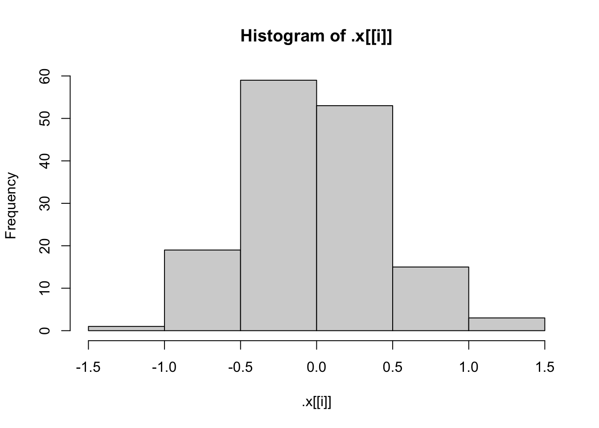
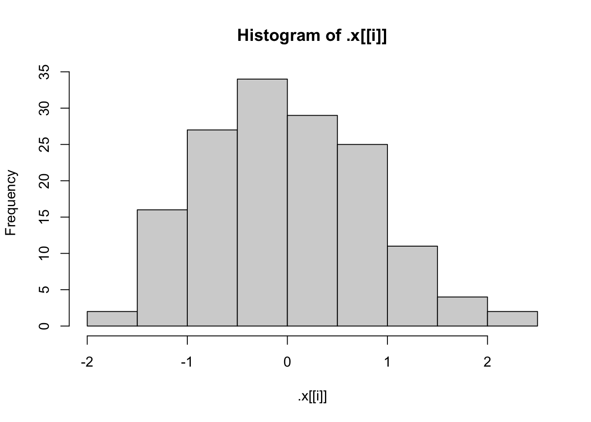
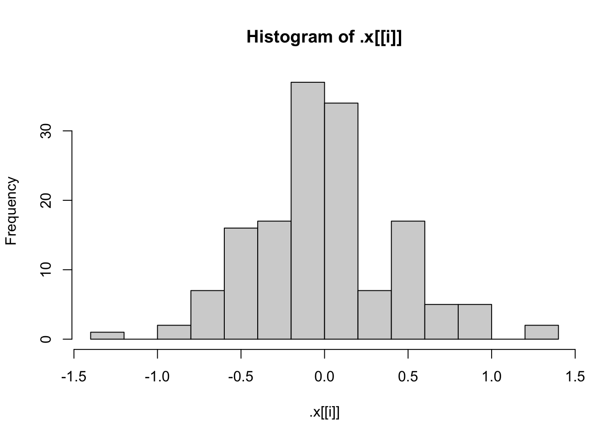
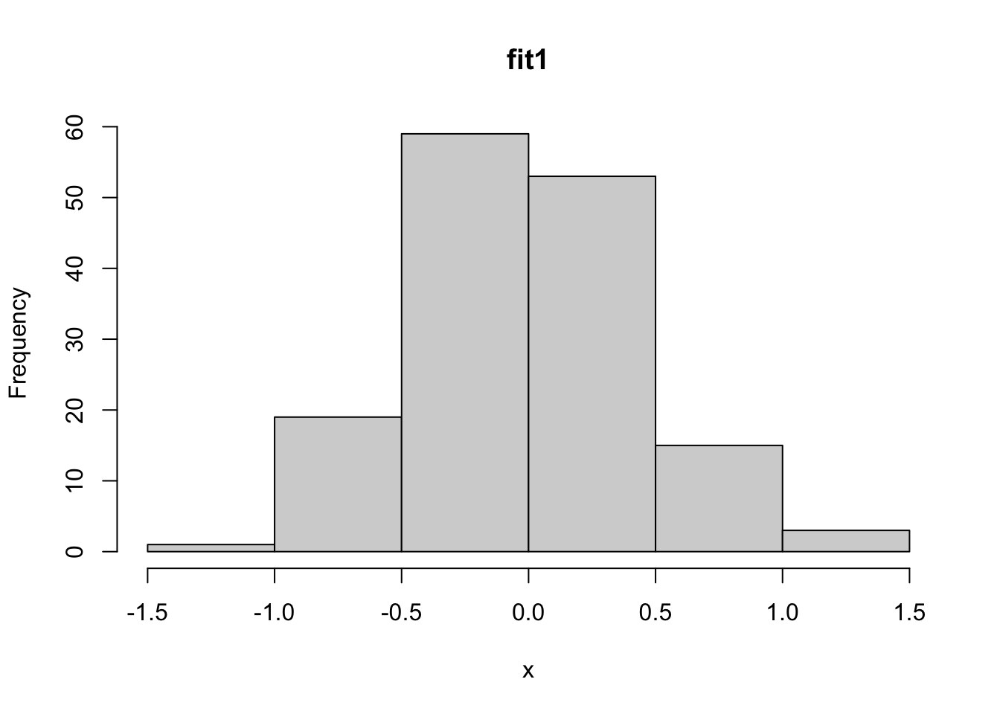
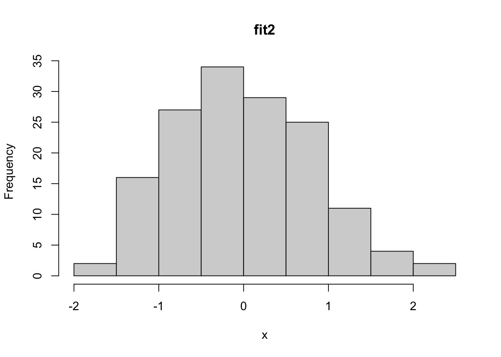
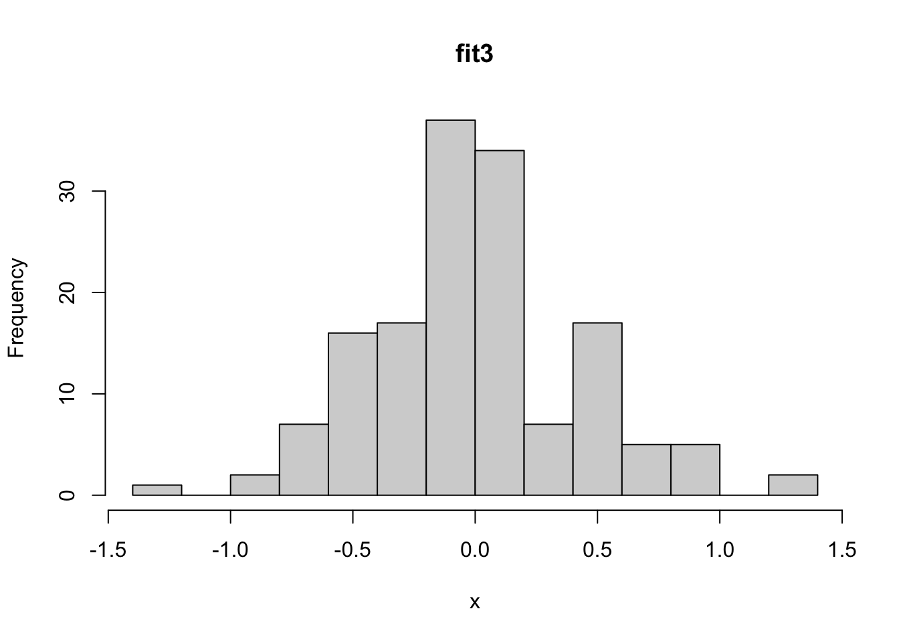
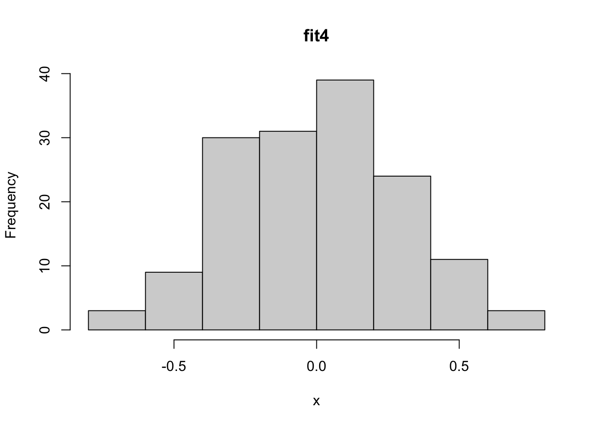

summary(cars) speed dist
Min. : 4.0 Min. : 2.00
1st Qu.:12.0 1st Qu.: 26.00
Median :15.0 Median : 36.00
Mean :15.4 Mean : 42.98
3rd Qu.:19.0 3rd Qu.: 56.00
Max. :25.0 Max. :120.00 ##Task 1: Conceptual Questions
1.What is the purpose of the lapply() function? What is the equivalent purrr function?
The lapply() function applies a function to a list. Map() is the equivalent to lapply() in purrr.
2. Suppose we have a list called my_list. Each element of the list is a numeric data frame (all columns are numeric). We want use lapply() to run the code cor(numeric_matrix, method = “kendall”) on each element of the list. Write code to do this below! (I’m really trying to ask you how you specify method = “kendall” when calling lapply())
lapply(my_list, cor, method = “kendall”)
3. What are two advantages of using purrr functions instead of the BaseR apply family?
Main advantage is more consistency and some helper functions
4. What is a side-effect function?
A side-effect function is one of the functions like print, write.csv(), plots, etc.
5. Why can you name a variable sd in a function and not cause any issues with the sd function?
When you define a variable in the function it only lives in the function, so it is not trying to do anything globally so it won’t mess with the usual sd function.
This is an R Markdown document. Markdown is a simple formatting syntax for authoring HTML, PDF, and MS Word documents. For more details on using R Markdown see http://rmarkdown.rstudio.com.
When you click the Knit button a document will be generated that includes both content as well as the output of any embedded R code chunks within the document. You can embed an R code chunk like this:
summary(cars) speed dist
Min. : 4.0 Min. : 2.00
1st Qu.:12.0 1st Qu.: 26.00
Median :15.0 Median : 36.00
Mean :15.4 Mean : 42.98
3rd Qu.:19.0 3rd Qu.: 56.00
Max. :25.0 Max. :120.00 ##Task 2 - Writing R Functions
1.Write a basic function (call it getRMSE()) that takes in a vector of responses and a vector of predictions and outputs the RMSE.
getRMSE<-function(responses, predictions, ...){
rmse <- sqrt(mean((responses - predictions)^2, ...))
return(rmse)
} set.seed(10)
n <- 100
x <- runif(n)
resp <- 3 + 10 * x + rnorm(n)
pred <- predict(lm(resp ~ x), data.frame(x))
#Checking RMSE Function
getRMSE(resp, pred)[1] 0.9581677# Replace two response values with NA_real_
resp[2] <- NA_real_
resp[4] <- NA_real_
# Check if RMSE still works if some values are NA
getRMSE(resp, pred, na.rm = TRUE)[1] 0.9463841getMAE<-function(responses, predictions, ...){
mae <- mean(abs(responses - predictions), ...)
return(mae)
} set.seed(10)
n <- 100
x <- runif(n)
resp <- 3 + 10 * x + rnorm(n)
pred <- predict(lm(resp ~ x), data.frame(x))
#Checking MAE Function
getMAE(resp, pred)[1] 0.8155776# Replace two response values with NA_real_
resp[2] <- NA_real_
resp[4] <- NA_real_
# Check if RMSE still works if some values are NA
getMAE(resp, pred, na.rm = TRUE)[1] 0.8087196 wrapper<- function(responses, predictions, metrics = c("RMSE", "MAE"), ...) {
results <- list()
# --- Check inputs ---
if (!(is.vector(responses)) | !(is.atomic(responses)) | !(is.numeric(responses))) {
stop("'responses' must be a numeric atomic vector.")
}
if (!(is.vector(predictions)) | !(is.atomic(predictions)) | !(is.numeric(predictions))) {
stop("'predictions' must be a numeric atomic vector.")
}
if (length(responses) != length(predictions)) {
stop("'responses' and 'predictions' must have the same length.")
}
if ("RMSE" %in% metrics) {
results$RMSE <- getRMSE(responses, predictions, ...)
}
if ("MAE" %in% metrics) {
results$MAE <- getMAE(responses, predictions, ...)
}
else{
results$RMSE <- getRMSE(responses, predictions, ...)
results$MAE <- getMAE(responses, predictions, ...)
}
return(results)
}set.seed(10)
n <- 100
x <- runif(n)
resp <- 3 + 10 * x + rnorm(n)
pred <- predict(lm(resp ~ x), data.frame(x))
#Checking MAE only
wrapper(resp, pred, metrics="MAE")$MAE
[1] 0.8155776#Checking RSME only
wrapper(resp, pred, metrics="RSME")$RMSE
[1] 0.9581677
$MAE
[1] 0.8155776#Checking both
wrapper(resp, pred, metrics = c("RMSE", "MAE"))$RMSE
[1] 0.9581677
$MAE
[1] 0.8155776#Checking if no metric is specifiied
wrapper(resp, pred)$RMSE
[1] 0.9581677
$MAE
[1] 0.8155776# Replace two response values with NA_real_
resp[2] <- NA_real_
resp[4] <- NA_real_
# Check if wrapper still works if some values are NA
#Checking MAE only
wrapper(resp, pred, metrics="MAE", na.rm = TRUE)$MAE
[1] 0.8087196#Checking RSME only
wrapper(resp, pred, metrics="RSME", na.rm = TRUE)$RMSE
[1] 0.9463841
$MAE
[1] 0.8087196#Checking both
wrapper(resp, pred, metrics = c("RMSE", "MAE"), na.rm = TRUE)$RMSE
[1] 0.9463841
$MAE
[1] 0.8087196#Checking if no metric is specified
wrapper(resp, pred, na.rm = TRUE)$RMSE
[1] 0.9463841
$MAE
[1] 0.8087196#Checking passing someting it should not get
responses_df <- data.frame(3, 5, 2.5, 7)
predictions_df <- data.frame(2.5, 5, 4, 8)
try(wrapper(responses_df, predictions_df))Error in wrapper(responses_df, predictions_df) :
'responses' must be a numeric atomic vector.##Task 3 - Practice with purrr
library(purrr)
iris<-iris
lm_fit1 <- lm(Sepal.Length ~ Sepal.Width + Species, data = iris)
print(lm_fit1)
Call:
lm(formula = Sepal.Length ~ Sepal.Width + Species, data = iris)
Coefficients:
(Intercept) Sepal.Width Speciesversicolor Speciesvirginica
2.2514 0.8036 1.4587 1.9468 #Getting coefficients with $
lm_fit1$coefficients (Intercept) Sepal.Width Speciesversicolor Speciesvirginica
2.2513932 0.8035609 1.4587431 1.9468166 #Getting coefficients with coef
coef(lm_fit1) (Intercept) Sepal.Width Speciesversicolor Speciesvirginica
2.2513932 0.8035609 1.4587431 1.9468166 #Getting coefficients with coef
pluck(lm_fit1, "coefficients") (Intercept) Sepal.Width Speciesversicolor Speciesvirginica
2.2513932 0.8035609 1.4587431 1.9468166 lm_fit2 <- lm(Sepal.Length ~ Sepal.Width, data = iris)
lm_fit3 <- lm(Sepal.Length ~ Petal.Width + Sepal.Width + Species, data = iris)
lm_fit4 <- lm(Sepal.Length ~ Petal.Width + Petal.Length + Sepal.Width + Species,
data = iris)
fits <- list(lm_fit1, lm_fit2, lm_fit3, lm_fit4)
#Now let’s use the purrr::map() function to pull out the coefficients of each model fit from the fits object (using pluck!).
map(fits, pluck, "coefficients")[[1]]
(Intercept) Sepal.Width Speciesversicolor Speciesvirginica
2.2513932 0.8035609 1.4587431 1.9468166
[[2]]
(Intercept) Sepal.Width
6.5262226 -0.2233611
[[3]]
(Intercept) Petal.Width Sepal.Width Speciesversicolor
2.5210733 0.3715768 0.6982260 0.9881297
Speciesvirginica
1.2375878
[[4]]
(Intercept) Petal.Width Petal.Length Sepal.Width
2.1712663 -0.3151552 0.8292439 0.4958889
Speciesversicolor Speciesvirginica
-0.7235620 -1.0234978 confint(lm_fit1) 2.5 % 97.5 %
(Intercept) 1.5206309 2.982156
Sepal.Width 0.5933983 1.013723
Speciesversicolor 1.2371791 1.680307
Speciesvirginica 1.7491525 2.144481#Use map() to apply the confint() function to each model fit in the fits object
map(fits, confint)[[1]]
2.5 % 97.5 %
(Intercept) 1.5206309 2.982156
Sepal.Width 0.5933983 1.013723
Speciesversicolor 1.2371791 1.680307
Speciesvirginica 1.7491525 2.144481
[[2]]
2.5 % 97.5 %
(Intercept) 5.579865 7.47258038
Sepal.Width -0.529820 0.08309785
[[3]]
2.5 % 97.5 %
(Intercept) 1.74261803 3.2995285
Petal.Width -0.02042746 0.7635811
Sepal.Width 0.46205710 0.9343950
Speciesversicolor 0.44520784 1.5310516
Speciesvirginica 0.46412393 2.0110518
[[4]]
2.5 % 97.5 %
(Intercept) 1.6182321 2.72430044
Petal.Width -0.6140049 -0.01630542
Petal.Length 0.6937939 0.96469395
Sepal.Width 0.3257653 0.66601260
Speciesversicolor -1.1982739 -0.24885002
Speciesvirginica -1.6831329 -0.36386273par(mfrow = c(1, 1))
#Now, pull out the residual vectors (the resid elements of your fits) using map(). Then use the walk() function with hist to create plots.
# Extract residuals from each model in the fits list
resids <- map(fits, resid)
#use walk for the histogram
walk(resids, hist)



par(mfrow = c(1, 1))
names_resid<-set_names(resids, c("fit1", "fit2", "fit3", "fit4"))
help(imap)
iwalk(names_resid, \(x, idx) hist(x, main = idx))


